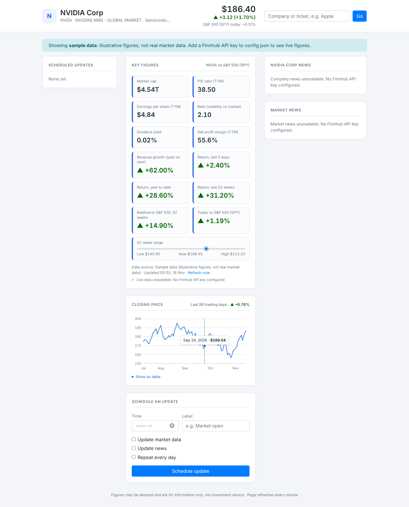

Shown with the bundled sample data (illustrative figures, not real market data).
What it is
A rebuild of my Covid-19 Personalised Dashboard, with a company in place of the local area and a market benchmark in place of the nation. It brings together a company's price and day change, valuation and return figures, how it compares with the S&P 500, a price chart, recent stories about the company and general market headlines.
The build
The main addition is a modular provider layer. Every data source (Finnhub, Alpha Vantage, NewsAPI and a bundled sample set) sits behind the same small interface, so each role, from quotes and price history to company and market news, can be pointed at a different provider in config.json without touching the rest of the app.
Answers are cached, and data is only fetched at startup, on a company switch, a manual refresh or a scheduled update, which keeps it within free-tier limits. If live data can't be fetched, the dashboard falls back to sample data for NVIDIA and labels it clearly. Updates can be scheduled for a time of day, once or daily, and the whole app is covered by a pytest suite that runs without network access or API keys.
What I learned
Defining one provider interface so new data sources can be added without changing the app around them.
Turning differently shaped responses from three services into one consistent internal format.
Caching, fetching only when needed and falling back to sample data when a source is unavailable.
Using fake HTTP sessions and a simulated clock so providers and the scheduler can be tested reliably.
Drawing the price chart as plain SVG, with a hover readout and a table view for accessibility.
Taking university coursework and reshaping it into a cleaner, more general application.
What I'd do next
- Store scheduled updates and dismissed articles so they survive a restart.
- Add side-by-side comparison of two or more companies.
- Deploy a public demo running on the sample data.